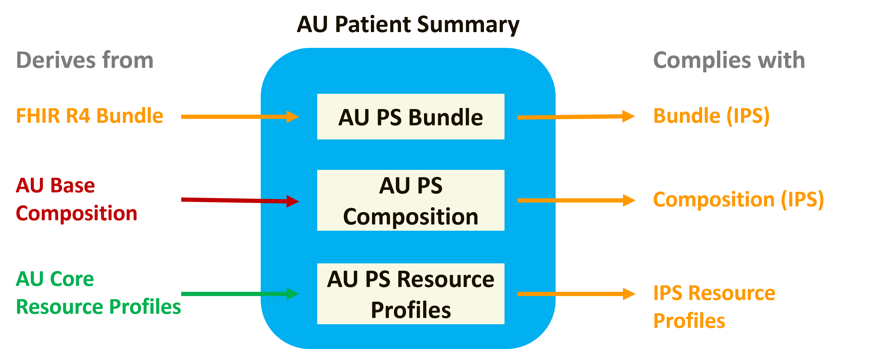
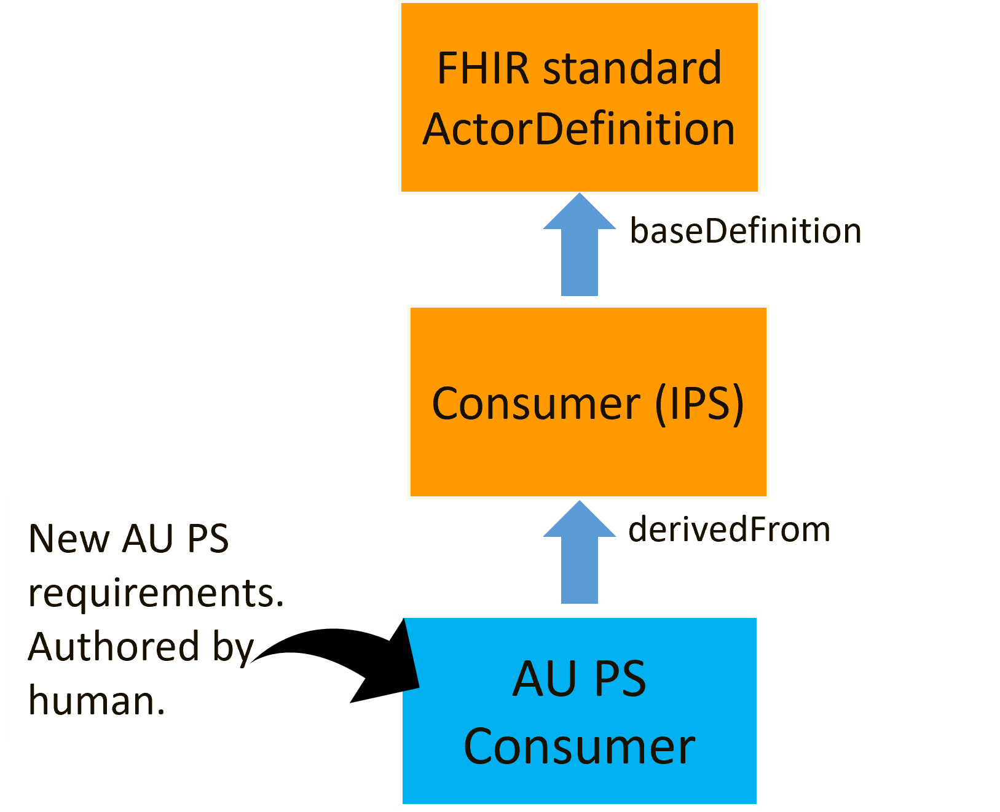

AU Patient Summary Implementation Guide
1.0.0-ci-build - CI Build

AU Patient Summary Implementation Guide
1.0.0-ci-build - CI Build

This page is part of the AU Patient Summary (v1.0.0-ci-build: QA Preview) based on FHIR (HL7® FHIR® Standard) R4. The current version which supersedes this version is the current version. For a full list of available versions, see the Directory of published versions
| Page standards status: Informative |
AU Patient Summary (AU PS) is provided to support the use of patient summaries in HL7 FHIR in an Australian context. AU PS is based on IPS and AU Core, setting the minimum conformance expectations for implementing AU PS documents in systems.
AU PS, by design:
The approach to describing the 'minimum' in AU PS means modelling in such a way that 'at least' what is to be supported is defined without limiting meaningful options for business rules and different clinical workflows. AU PS artefacts are therefore modelled as open templates allowing for additional content including elements, extensions, resources, search parameters, operations, and terminology whilst ensuring the minimum requirements are met.
Australian realm IGs and implementers are expected to comply with AU Base and AU Core and to define extensions, search parameters or operations (in order of precedence):
AU PS profiles:
In this release, AU PS does not define new extensions, terminology, search parameters, operations, or capability statements. Future releases of this IG may include these artefacts.
AU PS does not define new extensions. All extensions included in AU PS are defined in the FHIR Extensions Pack or AU Base. A limited set of extensions are indicated as Must Support in AU PS resource profiles; these supported extensions have been inherited from the underlying AU Core profile.
It is anticipated that extension profiles may be included in future releases of this IG.
AU PS does not define new terminology FHIR artefacts (e.g. value sets or code systems). Terminology supported in AU PS are published in AU Base, the FHIR standard, HL7 Terminology (THO), or the National Clinical Terminology Service (NCTS).
As part of profiling, AU PS inherits the AU Core localised terminology and indicates support expectations for an AU PS actor using Must Support and obligations. For more information on the terminology modelling inherited from AU Core see the guidance in AU Core Use of Terminology Bindings.
In terms of support in AU PS profiles, a coded element can have support defined for one or more value sets. Coded elements that define support for more than one value set include them in a profile by slicing the Coding part of the element and placing Must Support on each value set slice. These value set slices are not intended to prevent systems from supplying only a text value. Most coded Must Support elements in AU PS profiles define support for one value set, which is bound to the supported element and no value set slice is present.
For:
AU PS profiles are designed to ensure compliance with AU Core and IPS. AU PS profile design principles are as follows:
AU PS profiles:
When modelling AU PS resource profiles, they:

Figure 1: AU PS resource profile modelling
This modelling applies the typical HL7 AU profiling approach that uses derivation to manage compliance across the HL7 AU profile stack and allows for the addition of IPS and AU PS project requirements, see the example in the figure below.

Figure 2: Profiling approach for AU PS Patient profile
Due to this modelling, the "Differential Table" in an AU PS profile shows the patient summary requirements that are additional to AU Core. In some profiles (e.g. AU PS Organization), the only additional requirements are the obligations for AU PS actors.
The AU PS Bundle profile is not based on AU Core or AU Base as no Bundle profile exists in either IG. The approach to profiling for AU PS Bundle is to:

Figure 3: Profiling approach for AU PS Bundle profile
This approach to AU PS Bundle profiling (deriving from the FHIR Bundle resource and not Bundle (IPS) profile) has been taken as at the time of publication of this release there is a tooling limitation that prevents meeting both of the below conditions:
Additional detail on profiling is:
Must Support is used to indicate the elements and extensions that form the minimum requirements of AU PS. Labelling an element Must Support means that systems that produce or consume resources are to provide support for the element in some meaningful way. The FHIR standard does not define exactly what 'meaningful' support for an element means, but indicates that a profile needs to make clear exactly what kind of support is required when an element is labelled as Must Support.
The set of Must Support elements in AU PS profiles is inherited from AU Core and IPS profiles (i.e. the union of IPS and AU Core elements labelled Must Support). In addition, the mandatory elements in AU PS Bundle are labelled with Must Support (e.g. Bundle.type). This is applied as the convention in this guide is to mark all mandatory elements as Must Support unless they are nested under an optional element.
The meaning of Must Support in AU PS is defined in:
See Must Support and Obligation for a detailed description of how this is applied in AU PS.
When managing profile complexity and requirements in the national and international context for AU PS, the following mechanisms are available:
These mechanisms offer differing capabilities and advantages. Typically HL7 AU profiles use derivation to manage compliance within HL7 AU inheritance (e.g. AU PS Patient Profiling Approach). However, as AU PS will comply with both HL7 AU (AU Core) and HL7 Universal Realm (IPS), additional mechanism(s) on top of derivation from the underlying HL7 AU profile stack are required. At this time additional requirements are included in AU PS profiles via informal alignment (i.e. human authoring, human checking) and a compliesWithProfile declaration is made.
For a human, the main differences with use of imposeProfile are:
To support reduction of maintenance efforts in AU PS, it is under consideration that all AU PS profiles derive from AU Core, where available, and use imposeProfile to apply IPS rules. That would mean that either:
Users of this implementation guide are encouraged to provide their feedback about the potential use of imposeProfile.
AU PS actors are defined to describe the specific sets of functionality supported by systems that play a role in producing or consuming AU PS documents. Each actor is defined by:

Figure 4: Derivation approach for AU PS Consumer actor
In this release, AU PS does not include capability statements that describe the requirements for an AU PS actor. It is anticipated that capability statements may be included in future releases of this IG.
AU PS actors are designed to ensure compliance with IPS and support the use of patient summaries in Australia. AU PS actor design principles are as follows:
As in IPS, a producer can send:
Additional sections or elements are often required by other profiles the system may conform to, allowing local requirements, including technical and workflow context for the resource, to be reflected and extending the health information supported in exchanges. For this reason, extensibility is generally encouraged and expected in AU PS profiles. Only in some exceptionally rare use case profiles are rules tightened to limit the nature of additional information that can be sent.
Implementers intending to populate the AU PS with an unprofiled resource type, e.g. MedicationAdministration, are recommended to consider the corresponding AU Base profile, e.g. AU Base MedicationAdministration, as guidance for that resource type in an Australian healthcare context.
Implementers need to be aware, the rules of the Composition.section:All Slices defined in the AU PS Composition profile apply to all sections, defined or undefined:
Composition.section.title is mandatory and has obligations defined for AU PS Producers and AU PS ConsumersComposition.section.code is mandatory and has obligations defined for AU PS Producers and AU PS ConsumersComposition.section.text is mandatory and has obligations defined for AU PS Producers and AU PS ConsumersIt is recommended that where a producing system intends to populate 'additional' sections there is some definition available in a specification describing the intended contents and use of these additional sections.
Specification authors adopting AU PS are encouraged to enable greater interoperability and software re-use by avoiding reductions in an element's cardinality.
Depending on local requirements, a consumer (i.e. client application) may ignore these 'additional' elements, may treat the data as for rendering only, or be capable of recognising and using the element.
The AU PS shares the same structure as IPS and contains sections that can include coded elements in reusable 'minimal' data blocks.
The AU PS identifies a number of terminologies as Must Support for AU PS consumers and producers. Primary terminologies used in this specification include SNOMED CT Australian Edition (SNOMED CT-AU) for clinical concepts (e.g. allergies, problems, procedures, medicines), LOINC for observation codes (e.g. pathology results and vital signs), UCUM for units of measure, ISO 3166 for countries, PBS Item codes for medicines, Australian Immunisation Register codes for vaccines, and FHIR defined CodeSystems.
Within the AU PS context (i.e. the Australian healthcare context), the Australian localised value sets, developed and published by the National Clinical Terminology Service (NCTS) and the HL7 AU FHIR Working Group are preferred over IPS value sets to support the consumer on their healthcare journey in the AU healthcare context.
In an IPS context, IPS proposes that to support interoperability of IPS content between organisations that use different SNOMED CT value set content, a 'common proximal ancestor' strategy is used. See IPS Structuring Terminology Choices for more information.
See the guidance defined in IPS Patient Safety in IPS Context.
See the guidance defined in AU Core Medicine Information.
See the guidance defined in AU Core Representing Body Site, Which May Include Laterality.
See the guidance defined in IPS Provenance.
IG © 2024+ HL7 Australia. Package hl7.fhir.au.ps#1.0.0-ci-build based on FHIR 4.0.1. Generated 2026-06-19
Links: Table of Contents |
QA Report
| Version History |
 |
Propose a change
|
Propose a change